Когнитивно-поведенческая терапия (КПТ) — это научно обоснованный метод психотерапии, направленный на изменение негативных мыслительных и поведенческих моделей, лежащих в основе различных психологических проблем. В последние годы КПТ стала одним из ведущих подходов в психотерапии, благодаря своей эффективности и структурированности. Для специалистов, стремящихся углубить свои знания в этой области или начать обучение с нуля, мы подготовили рейтинг из 16 лучших курсов по КПТ на 2024–2025 годы. В нашем обзоре представлены программы, предлагающие как базовые знания, так и углубленное изучение техник КПТ, что позволит каждому выбрать оптимальный путь профессионального развития.
Топ онлайн-курсов по КПТ
- 🏆 Когнитивно-поведенческий психотерапевт — МИП (по промокоду onlinekursy скидка 🎁 +10%)
- 🏆 Когнитивно-поведенческая психотерапия — Psychodemia (по промокоду OnlineKursy действует скидка 🎁 5000 руб)
- 🏆 Психолог – когнитивно-поведенческий терапевт, MBA — МИПО психология (по промокоду onlinekursy 🎁 скидка 5%)
- Когнитивно-поведенческая терапия — SMART
- Когнитивно-поведенческая психотерапия — MITM
- Когнитивно-поведенческая психотерапия в практике психолога — МИПО (по промокоду onlinekursy действует скидка 🎁 10%)
- Когнитивно-поведенческая терапия, MBA — Talentsy
- Когнитивно-поведенческая психотерапия в практике психолога — НАДПО (по промокоду onlinekursy действует скидка 🎁 5%)
- Когнитивно-поведенческая психотерапия в практике психолога — ИПО
- Когнитивно-поведенческая психотерапия в практике психолога — НЦРДО (по промокоду onlinekursy действует скидка 🎁 5%)
- Метод когнитивно-поведенческой терапии (КПТ) в работе с преодолением тревожности и страхов — ИППСС
- Когнитивно-поведенческая терапия в практике психолога — Московская бизнес академия (по промокоду onlinekursy скидка 🎁 10%)
- Когнитивно-поведенческая психотерапия в практике психолога — ЦАППКК (по промокоду onlinekursy действует скидка 🎁 5%)
- Когнитивно-поведенческая терапия как метод психокоррекционного воздействия при аддиктивном и суицидальном поведении, тревожно-депрессивных расстройствах — НИИДПО
Рассмотрим курсы профессиональной переподготовки и повышения квалификации на когнитивно-поведенческоготерапевта подробнее.
1. 🏆 Когнитивно-поведенческий психотерапевт
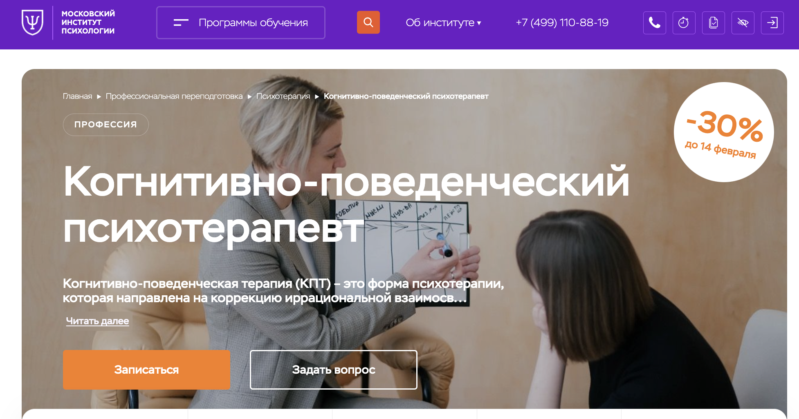- ✅ Официальный сайт: mip.institute
- 💸 Цена обучения: 112 320 ₽ (со скидкой 30%)
- 💳 Рассрочка: 12 месяцев, 9 400 ₽/мес
- 📚 Формат: дистанционное обучение с видеоуроками, тестами и домашними заданиями
- ⏳ Продолжительность: 10 месяцев
- 📜 Документ: диплом о профессиональной переподготовке
- 📝 Трудоустройство: выпускники могут рассчитывать на средний доход 100 000 р/мес
- 🔷 Для кого подходит курс: новички в психологии, практикующие психологи, желающие подтвердить квалификацию
Особенности курса:
Программа от Московского института психологии дает возможность изучить основы когнитивно-поведенческой психотерапии в удобном дистанционном формате. Студенты получают доступ к библиотеке, онлайн-лекциям и участиям в вебинарах. Широкий спектр тематических модулей позволяет глубоко разобраться в различных аспектах КПТ. Особенность курса — акцент на практическом применении теории в реальных кейсах и возможность стать членом ОППЛ, расширяя профессиональные горизонты.
Кратко о программе:
- Основы когнитивно-поведенческой терапии
- КПТ панического расстройства
- КПТ для расстройств личности и зависимости
- Этика и психологическая помощь
- Практикум по КПТ
Чему научитесь:
- Понимать принципы и техники КПТ.
- Компетентно работать с клиентами, применяя КПТ-диагностику.
- Разрабатывать индивидуальные терапевтические сессии.
- Решать большое количество психологических проблем с использованием КПТ.
Преимущества:
- Поддержка профессионального сообщества во время обучения.
- Лицензированный диплом, признаваемый за рубежом.
- Гибкий график — обучайтесь откуда угодно.
- Доступ к учебным материалам после завершения курса.
Отзывы учеников:
Студенты отмечают насыщенность программы и поддержку наставников. Многие обращают внимание на полезные чаты и доступ к материалам даже после завершения обучения. Такие элементы делают учебный процесс более комфортным и эффективным.
2. 🏆 Когнитивно-поведенческая психотерапия — Psychodemia
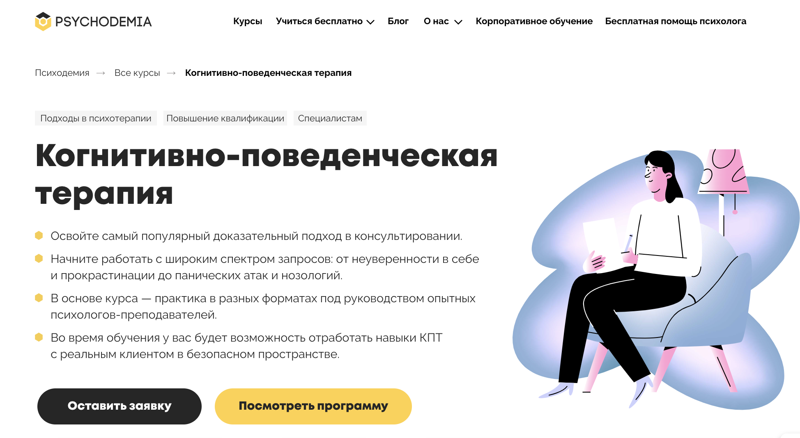- ✅ Официальный сайт: psychodemia.ru
- 💸 Цена обучения: Общая стоимость курса составляет от 143 750 ₽ (возможно возврат в виде налогового вычета).
- 💳 Рассрочка: до 18 месяцев с ежемесячными платежами от 7 986 руб/мес.
- 📚 Формат: онлайн курс, включающий видеоуроки, практические вебинары и сессии с реальными клиентами.
- ⏳ Продолжительность: 8 месяцев.
- 📜 Документ: удостоверение о повышении квалификации установленного образца (262–269 ак. часов).
- 📝 Трудоустройство: курс способствует укреплению уверенности для начала частной практики.
- 🔷 Для кого подходит курс: начинающие и практикующие психологи, стремящиеся расширить свой профессиональный инструментарий.
Особенности курса:
Курс предлагает множество практических форматов, в которых участники могут работать с реальными клиентами и испытывать на практике методы КПТ. Преподаватели с широкой экспертизой проводят супервизии, предоставляя ценные рекомендации. Программа включает ознакомление с различными психотерапевтическими подходами, а также подробные модули по работе с различными нозологиями. Студенты в процессе обучения имеют доступ к поддержке кураторов и могут участвовать в разнообразных онлайн-мероприятиях для расширения своих знаний и навыков. Особое внимание уделяется развитию самостоятельных навыков применения КПТ в практике.
Кратко о программе:
- Основы КПТ и начало работы
- Работа с автоматическими мыслями и убеждениями
- Продвинутые техники для сложных случаев
- Реальные сессии с клиентами
Чему научитесь:
- Использовать поведенческие эксперименты и активацию.
- Формировать и проверять терапевтические гипотезы.
- Настраивать новые модели поведения вместе с клиентами.
- Принимать и внедрять техники КПТ в личную и профессиональную практику.
Преимущества:
- Структурированный и доказательный подход.
- Быстрое достижение результатов с клиентами.
- Поддержка и супервизии от профессиональных ценителей КПТ.
- Практико-ориентированная программа с акцентом на реальную работу с клиентами.
- Возможность адаптации КПТ для нестандартных клиентских случаев.
Отзывы учеников:
Студенты часто отмечают высокий уровень организации курса и его практико-ориентированность. Также выделяется поддержка кураторов и возможность применения знаний на практике с реальными клиентами, что делает обучение максимально полезным и актуальным.
3. 🏆 Психолог – когнитивно-поведенческий терапевт, MBA – МИПО психология
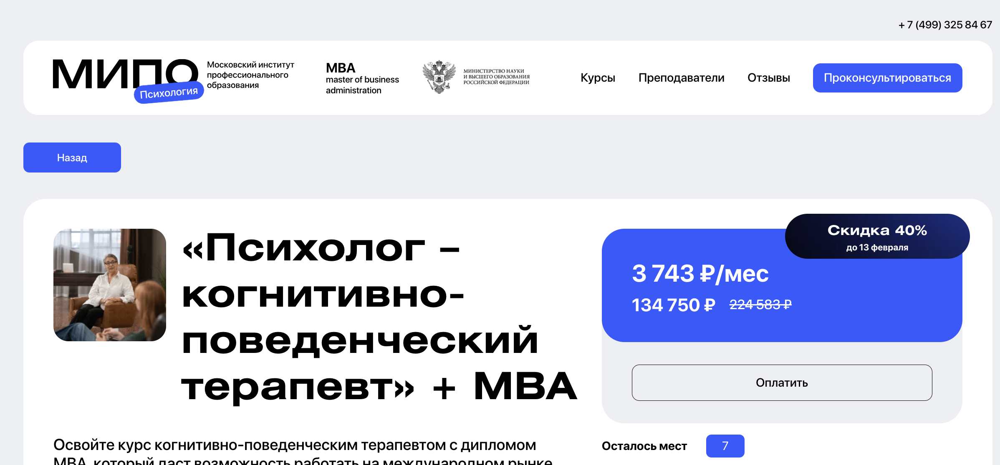- ✅ Официальный сайт: mipoin.ru
- 💸 Цена обучения: 134 750 ₽ при скидке 40%
- 💳 Рассрочка: возможна оплата в рассрочку по 3 743 ₽/мес
- 📚 Формат: дистанционное обучение с видеоуроками, практическими заданиями и тестами
- ⏳ Продолжительность: 15 месяцев
- 📜 Документ: дипломы о профессиональной переподготовке
- 📝 Трудоустройство: возможность начать практику сразу после обучения
- 🔷 Для кого подходит курс: социальные работники, практикующие психологи, желающие повысить квалификацию
Особенности курса:
Программа обучения формирует у студентов глубокие знания в области когнитивно-поведенческой терапии и бизнес-психологии. Приобретенные навыки позволят профессионально работать с различными группами клиентов, диагностировать их проблемы, и предлагать эффективные решения. Курс дополнен организационными психологическими методиками и обучением лидерским качествам. Участникам предоставляется возможность изучить техники управления конфликтами и практические задания, что способствует развитию практических навыков и повышению конкурентоспособности на рынке труда.
Кратко о программе:
- Основы когнитивно-поведенческой терапии
- Психологическое консультирование
- Бизнес-психология и управление
- Лидерство и командообразование
- Эффективные коммуникации
- Психодиагностика и тестирование
- Тайм-менеджмент
- Карьерное и бизнес-консультирование
Чему научитесь:
- Выявлять и изменять негативные когнитивные и поведенческие схемы
- Эффективно консультировать и адаптировать подходы к разным клиентам
- Применять бизнес-психологию в корпоративной среде
- Управлять личным и командным временем
- Решать конфликты и поддерживать работу в командах
Преимущества:
- Получение трех дипломов и двух квалификаций одновременно
- Возможность обучения в удобном темпе дистанционно
- Поддержка со стороны преподавателей и других студентов через чат в Телеграм
- Практическая направленность обучения с ориентацией на реальные кейсы
Отзывы учеников:
Студенты института отмечают доступность видеоуроков и возможность обучения в удобное время. Высоко ценится взаимодействие с преподавателями и возможность применения знаний в реальной практике. Многим помогло улучшить свою квалификацию и кардинально сменить направление работы.
4. Когнитивно-поведенческая терапия — SMART
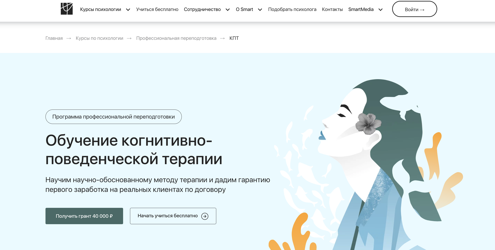- ✅ Официальный сайт: smart-inc.ru
- 💸 Цена обучения: зависит от пакета, предусмотрены гранты до 40 000 ₽, от 179 900 рублей (с учетом гранта)
- 💳 Рассрочка: до 24 месяцев от 7 496 руб/мес.
- 📚 Формат: онлайн обучение с видеолекциями, интерактивными занятиями и практикумами.
- ⏳ Продолжительность: от 10 месяцев.
- 📜 Документ: диплом о профессиональной переподготовке или диплом MBA.
- 📝 Трудоустройство: поддержка Центра карьеры, предоставление клиентов для практики.
- 🔷 Для кого подходит курс: начинающим психологам, педагогам, тем, кто хочет освоить новую профессию.
Особенности курса:
Курс отличается глубокой проработкой когнитивно-поведенческой терапии, сочетая теорию с практическими заданиями. Обучение проводится в удобном дистанционном формате, что позволяет учиться в любом месте и времени. Программа покрывает актуальные проблемы психологии, включая работу с депрессией и тревожными расстройствами. Студентам предоставляется доступ к видеолекциям круглосуточно, а также интерактивные сессии с экспертами для отработки техник. Высококвалифицированные преподаватели и постоянная поддержка кураторов делают обучение продуктивным и мотивирующим.
Кратко о программе:
- Основы когнитивно-поведенческой психотерапии.
- Базовые техники и инструменты КПТ.
- КПТ для психологической и медицинской помощи.
- Современные направления КПТ «третьей волны».
- Работа с группами и индивидуальными клиентами.
Чему научитесь:
- Эффективно применять КПТ в работе с депрессией и тревожностью.
- Использовать техники управления стрессом.
- Помогать клиентам разрабатывать позитивное мышление.
- Работать с различными видами зависимости.
Преимущества:
- Практическое обучение с возможностью получения обратной связи от инструкторов.
- Постоянный доступ к учебным материалам и видеолекциям.
- Актуальные методики и подходы, признанные международными сообществами.
- Поддержка карьерного роста и развитие личного бренда.
Отзывы учеников:
Студенты отмечают гибкость обучения и высокую квалификацию преподавателей. Многие подчеркивают практическую ориентированность курса и полезность супервизий. Также пользователи выделяют помощь в трудоустройстве и профессиональном развитии.
5. Когнитивно-поведенческая психотерапия — MITM
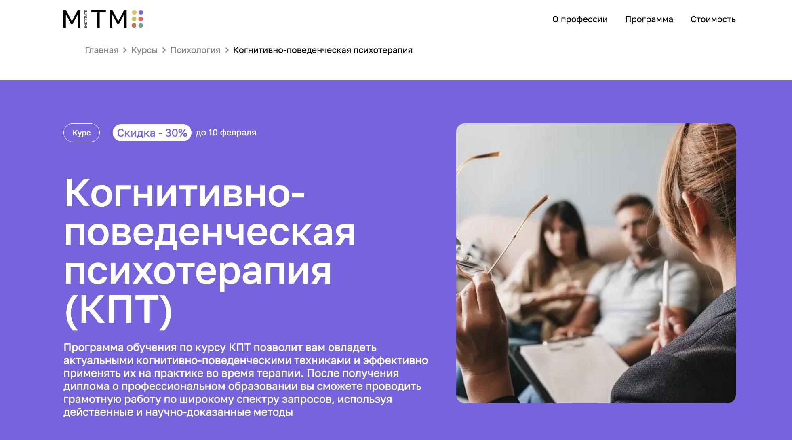- ✅ Официальный сайт: mitm.institute
- 💸 Цена обучения: 110 040 рублей (с учетом скидки — 30%)
- 💳 Рассрочка: до 12 месяцев по 9 170 руб/мес
- 📚 Формат: дистанционные уроки, домашние задания, тесты и супервизии.
- ⏳ Продолжительность: 1 год.
- 📜 Документ: диплом государственного образца.
- 📝 Трудоустройство: помощь в карьере и сопровождение.
- 🔷 Для кого подходит курс: для психологов, студентов и всех интересующихся психологией и общественными науками.
Особенности курса:
Курс по когнитивно-поведенческой психотерапии от Московского института технологий и управления предлагает уникальную возможность освоить профессию психолога-консультанта. В процессе обучения студенты овладеют методами КПТ для работы с широким спектром проблем, включая тревожность и фобии. Программа адаптирована под современные реалии и требования работодателей, что гарантирует актуальность полученных знаний. Участники курса могут общаться с менторами и коллегами через Telegram-чат, а также использовать помощь кураторов 24/7.
Кратко о программе:
- Основы когнитивной психологии
- Психодиагностика и типология личности
- Методы психологической помощи
- Семейная и возрастная психология
- Практическое применение КПТ
- Анализ и разработка стратегий интервенции
Чему научитесь:
- Оказывать эффективную психологическую помощь
- Строить концептуализацию случая по модели КПТ
- Создавать психологические портреты
- Консультировать индивидуально и в группе
- Использовать техники КПТ
Преимущества:
- Программа соответствует требованиям современных работодателей
- Поддержка опытных кураторов на каждом этапе обучения
- Возврат части стоимости обучения через налоговый вычет
- Гибкий дистанционный формат, позволяющий обучаться из любой точки мира
Отзывы учеников:
Студенты отмечают высокую квалификацию преподавателей и возможность мгновенно применять знания на практике. Многие подчеркивают доступность материала и поддержку сообщества во время обучения.
6. Когнитивно-поведенческая психотерапия в практике психолога — МИПО
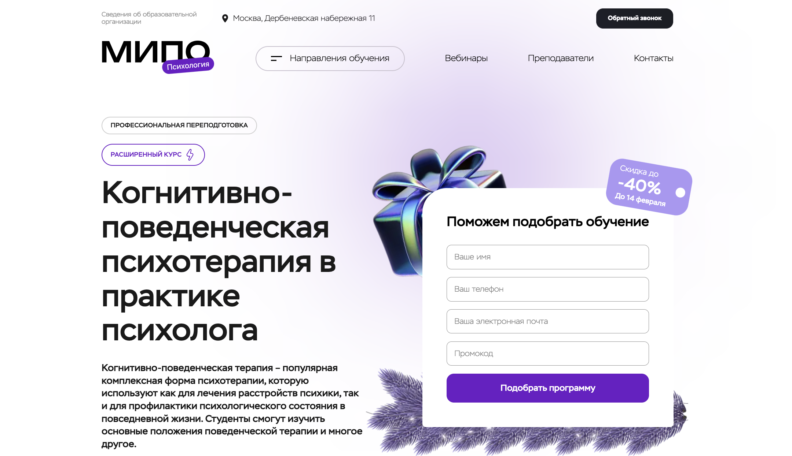- ✅ Официальный сайт: mipo.msk.ru
- 💸 Цена обучения: 55 000 рублей (с учетом скидки), налоговый вычет до 13%
- 💳 Рассрочка: до 12 месяцев, платежи от 4 584 ₽/мес
- 📚 Формат: онлайн вебинары, видеоуроки, тесты, домашние задания
- ⏳ Продолжительность: 11 месяцев
- 📜 Документ: диплом о профессиональной переподготовке
- 📝 Трудоустройство: расширенные возможности благодаря международному признанию диплома
- 🔷 Для кого подходит курс: начинающие и работающие психологи, желающие подтвердить квалификацию
Особенности курса:
Курс разработан с учетом последних требований рынка и включает в себя теоретические и практические модули. Программа предлагает возможность изучения как основ, так и продвинутых техник когнитивно-поведенческой терапии. Участники курса могут рассчитывать на обширную поддержку от преподавателей и кураторов на протяжении всего обучения. Важным аспектом является международное признание диплома, что открывает двери для работы за границей. Студенты также получают доступ к актуальным кейсам от опытных специалистов. Курс подходит для тех, кто ценит комфорт дистанционного обучения и возможность совмещать его с работой.
Кратко о программе:
- Теоретические и методологические основы
- Диагностика и планирование терапии
- Сбор данных и проведение диспутов
- Рабочий альянс и терапевтические отношения
- История и базовые понятия схема-терапии
Чему научитесь:
- Понимание основ рационально-эмоционально-поведенческой терапии
- Цели и задачи психологического консультирования
- Организация этапов консультаций
- Базовые навыки консультанта
- Требования к психологу-консультанту
Преимущества:
- Актуальные программы, обновляемые согласно современным требованиям
- Возможность международной работы благодаря признанию диплома
- Углубленный подход к теме когнитивно-поведенческой терапии
- Поддержка кураторов и преподавателей на всех этапах обучения
- Гибкий график, совмещение с основной работой
Отзывы учеников:
Студенты высоко оценивают качество преподавания и доступность материалов. Особенно отмечается поддержка кураторов и возможность просмотра лекций в удобное время. Участники говорят о значительном улучшении профессиональных навыков и уверенности после прохождения курса.
7. Когнитивно-поведенческая терапия, MBA — Talentsy
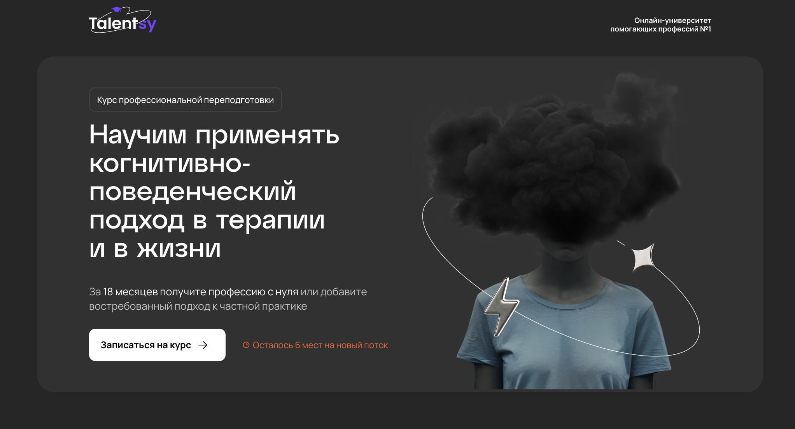- ✅ Официальный сайт: talentsy.ru
- 💸 Цена обучения: от 280 000 рублей (с учетом скидки), возможен возврат до 13% через налоговый вычет.
- 💳 Рассрочка: до 24 месяцев без процентов от 11 667 руб/мес
- 📚 Формат: онлайн занятия с видеоуроками, практиками, супервизиями и семинарами.
- ⏳ Продолжительность: 18 месяцев.
- 📜 Документ: диплом о профессиональной переподготовке, международный диплом MBA.
- 📝 Трудоустройство: поддержка карьерного центра, доступ к сервису практики консультаций.
- 🔷 Для кого подходит курс: начинающие и практикующие психологи, студенты, интересующиеся психологией.
Особенности курса:
Курс предлагает глубокое погружение в когнитивно-поведенческую терапию, поддержанное опытом ведущих специалистов. Обучение проходит в удобном формате, предусматривающем видеолекции и интерактивные воркшопы. Студенты могут обращаться за поддержкой к личным наставникам, которые строят комфортное расписание и напоминают о занятиях. Практика начинается с первых дней курса, что позволяет применить знания на реальных клиентах. Программа курса соответствует международным и российским стандартам, ее содержание регулярно обновляется в соответствии с последними научными исследованиями.
Кратко о программе:
- Введение в профессию психолог-консультант
- Основы общей психологии и психофизиологии
- Особенности консультирования клиентов разного возраста
- Психология кризисных ситуаций и кризисная психологическая помощь
- Когнитивно-поведенческий подход в психологическом консультировании
- Модуль «PROдвижение»: продвижение психологических услуг
Чему научитесь:
- Выявлять и изменять деструктивные убеждения у клиентов.
- Применять протоколы и техники КПТ на практике.
- Разрабатывать стратегии личного развития клиентов.
- Продвигать свои услуги в социальных сетях.
Преимущества:
- Доступ к опыту признанных экспертов в психологии.
- Сертификаты, дающие право работать за рубежом.
- Гибкое расписание, позволяющее совмещать с работой.
- Возможность обучения через доступные онлайн-ресурсы.
Отзывы учеников:
Студенты Talentsy часто отмечают поддержку от наставников и качество видеоматериалов, делая акцент на удобстве формата обучения и применимости знаний в реальных жизненных ситуациях. Выпускники также говорят о значительном профессиональном росте и успехах в личной практике.
8. Когнитивно-поведенческая психотерапия в практике психолога — НАДПО
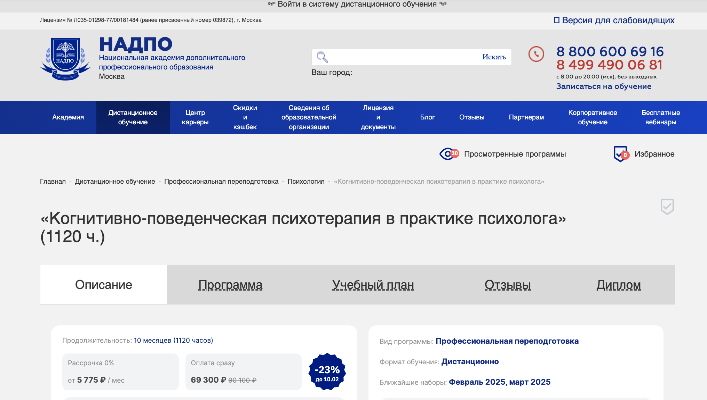- ✅ Официальный сайт: nadpo.ru
- 💸 Цена обучения: 69 300 ₽, со скидкой 23%
- 💳 Рассрочка: от 5 775 ₽ / мес, до 36 месяцев
- 📚 Формат: дистанционное обучение с курсом лекций, аудиолекциями и практическими заданиями
- ⏳ Продолжительность: 10 месяцев (1120 часов)
- 📜 Документ: диплом о профессиональной переподготовке
- 📝 Трудоустройство: консультации по развитию личного бренда и карьерного профиля
- 🔷 Для кого подходит курс: психологи, социальные работники, специалисты по психотерапии и сумежным направлениям
Особенности курса:
Курс погружает слушателей в глубины когнитивно-поведенческой терапии, обучая методам и приёмам, применимым в широком спектре практической работы. Программа от НАДПО выделяется своей структурированностью и практической направленностью, предлагая доступ к курсам 24/7 и поддержке преподавателей. Включены междисциплинарные модули, обеспечивающие расширенное понимание дисциплин. Также акцентируется внимание на практике работы с когнитивными и поведенческими техниками, которые можно сразу применять.
Кратко о программе:
- Общая и личностная психология
- Психодиагностика и консультирование
- Психотерапия и профессиональная этика
- Аддиктивное поведение и психокоррекция
- Психокоррекция кризисных состояний
- Специализированные дисциплины по терапии
Чему научитесь:
- Использовать КПТ при работе с депрессией и тревожностью
- Анализировать и оспаривать дисфункциональные мысли
- Применять техники десенсибилизации и ролевые игры
- Работать с когнитивными схемами и убеждениями клиентов
Преимущества:
- Адаптивное расписание занятий
- Доступ к уникальным материалам и библиотекам
- Практические сессии со студентами курсом
- Поддержка опытных специалистов
- Бессрочный доступ к курсу
- Развитие практических навыков работы с клиентами
Отзывы учеников:
Студенты курса НАДПО отмечают структурированность программы и доступность материалов. Высоко оценивается поддержка педагогов и практическая применение полученных знаний.
9. Когнитивно-поведенческая психотерапия в практике психолога — ИПО
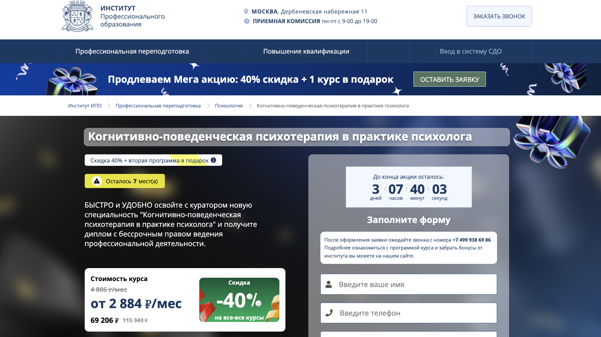- ✅ Официальный сайт: ipo.msk.ru
- 💸 Цена обучения: 69 206 ₽
- 💳 Рассрочка: на 24 месяца с ежемесячным платежом 2 884 ₽/мес
- 📚 Формат: дистанционное обучение с поддержкой куратора и доступом к urait.ru
- ⏳ Продолжительность: 47 недель (966 часов)
- 📜 Документ: диплом о профессиональной переподготовке с бессрочным правом ведения деятельности
- 📝 Трудоустройство: не указано
- 🔷 Для кого подходит курс: специалисты с высшим или средним специальным образованием
Особенности курса:
Курс по когнитивно-поведенческой психотерапии Института профессионального образования ориентирован на практическую подготовку специалистов. Уникальность курса заключается в возможности самостоятельного выбора интенсивности обучения благодаря гибкой дистанционной системе. Представленный материал подкреплен поддержкой кураторов и доступом к образовательной платформе urait.ru. НАНО «ИПО» гарантирует высокое качество обучения через участие высококвалифицированных преподавателей. С документами от института студенты получают признание в профессиональном сообществе и самостоятельное ведение консультационной практики. В число преимуществ входит возможность сократить длительность курса до 23,5 недель.
Кратко о программе:
- Общая психология
- Диагностика и концептуализация
- Работа с когнитивными искажениями
- Этические принципы консультирования
- История развития схема-терапии
Чему научитесь:
- Понимать и работать с когнитивными искажениями
- Проводить диагностику и формировать планы терапии
- Осуществлять консультирование и согласовывать терапевтический контракт
Преимущества:
- Гибкий график обучения без отрыва от работы
- Качественные знания и доступ к материалам на urait.ru
- Скидки на обучение и предложение курсов-подарков
- Возможность обучение без личного посещения
Отзывы учеников:
Обучающиеся отмечают высокое качество преподавания и гибкость формата, что позволяет сочетать обучение с работой. Также ценятся профессионализм кураторов и возможность использовать полученные знания в реальной практике.
10. Когнитивно-поведенческая психотерапия в практике психолога — НЦРДО
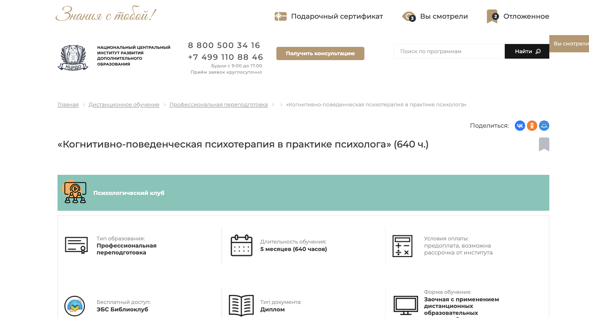- ✅ Официальный сайт: ncrdo.ru
- 💸 Цена обучения: 36 000 ₽ при предоплате, возможно снижение до 3 000 ₽/мес в рассрочку.
- 💳 Рассрочка: до 12 месяцев по 3 000 руб/мес
- 📚 Формат: Заочные занятия с дистанционными образовательными технологиями, аудиолекциями от профессионалов.
- ⏳ Продолжительность: 5 месяцев (640 часов).
- 📜 Документ: Диплом о профессиональной переподготовке.
- 📝 Трудоустройство: Поддержка в трудоустройстве, регистрация данных в Федеральном реестре.
- 🔷 Для кого подходит курс: Психологи и специалисты, желающие углубить знание КПТ.
Особенности курса:
Обучение в рамках данной программы позволяет эффективно применять когнитивно-поведенческие подходы в психологической практике. Курс акцентирует внимание на классических и новейших техниках КПТ, а также их применении в работе с различными психологическими расстройствами. Обучение заочное, но насыщенное, благодаря аудиолекциям и интерактивным заданиям. Студенты получают доступ к актуальной учебной литературе и сервисам, что позволяет осваивать навыки КПТ в комфортных условиях.
Кратко о программе:
- Знакомство с нормативными аспектами психологической деятельности.
- Изучение базовых концепций КПТ и их применение.
- Работа с когнитивными искажениями и деструктивными мыслительными моделями.
- Программные применения КПТ для различных типов расстройств, в том числе депрессий и фобий.
- Изучение методик «третьей волны» в КПТ.
Чему научитесь:
- Эффективному применению когнитивно-поведенческих подходов в терапии.
- Выявлять и корректировать когнитивные искажения у клиентов.
- Работать с аддиктивными и другими расстройствами.
- Использовать техники «третьей волны» для расширения терапевтического арсенала.
Преимущества:
- Информационная насыщенность без перегрузки учащихся.
- Аудиолекции и вебинары дают гибкость в обучении.
- Доступ к дополнительным учебным материалам на платформах ЛитРес и Библиоклуб.
- Возможность обучения без отрыва от основного места работы или колледжа.
Отзывы учеников:
Студенты НЦРДО отмечают высокое качество преподавания и практическую направленность курса. Они также обращают внимание на удобство заочной формы обучения и полезность предоставляемых материалов.
11. Метод когнитивно-поведенческой терапии (КПТ) в работе с преодолением тревожности и страхов — ИППСС
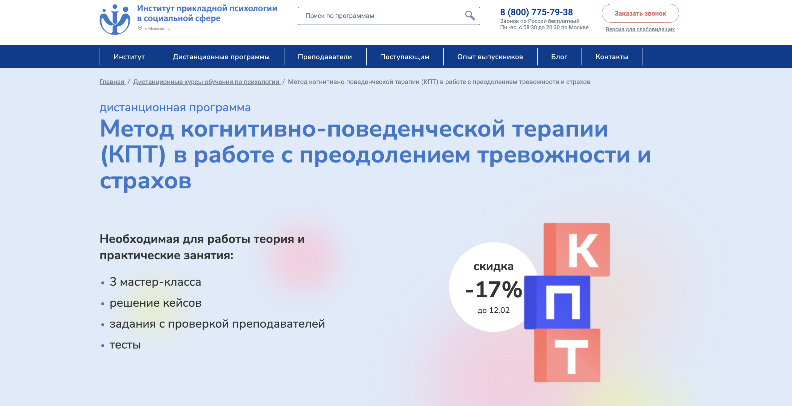- ✅ Официальный сайт: ippss.ru
- 💸 Цена обучения: 20,400 ₽ (с учетом скидки 16%).
- 💳 Рассрочка: возможна по согласованию.
- 📚 Формат: онлайн лекции, мастер-классы, практические задания и тесты.
- ⏳ Продолжительность: 200 часов (примерно 6 недель обучения).
- 📜 Документ: удостоверение о повышении квалификации.
- 📝 Трудоустройство: возможность ведения частной практики или работы в коммерческих центрах.
- 🔷 Для кого подходит курс: практикующие психологи, клинические психологи, психологи-консультанты.
Особенности курса:
Программа Института прикладной психологии в социальной сфере предлагает углубленное изучение когнитивно-поведенческой терапии с акцентом на работу с тревожностью и страхами. Курсы ведут эксперты с многолетним опытом, что позволяет студентам не только освоить теорию, но и применять полученные знания на практике. Благодаря поддержке куратора и взаимодействию с профессиональным сообществом, обучающиеся получают все необходимое для качественной работы с клиентами. Участники программы изучают природу тревожных расстройств и учатся различать их от схожих состояний, что повышает их квалификацию и дает возможность увеличить доход.
Кратко о программе:
- Основы когнитивно-поведенческой терапии.
- Методы диагностики и лечения тревожных расстройств.
- Паническое расстройство и генерализованная тревога.
- Социофобия и подходы к их лечению.
- Практические навыки КПТ.
- Этика и эмпатия в работе с клиентами.
Чему научитесь:
- Понимать принципы КПТ и работать в этом подходе.
- Проводить диагностику состояния тревоги и страха.
- Организовывать эффективную работу с клиентами.
- Разбираться в нейрофизиологии и генетике тревожных расстройств.
Преимущества:
- Углубленное изучение КПТ и ее применения.
- Практические задания с обратной связью от экспертов.
- Сертификаты государственного образца.
- Возможность работать по профессии сразу после обучения.
Отзывы учеников:
Студенты отмечают доступность обучения и возможность совмещать его с работой. Многие выделяют профессионализм преподавателей и актуальность предоставляемого материала. Одна из сильных сторон — отклики учеников по завершении курса, которые говорят о практических преимуществах полученных знаний.
12. Когнитивно-поведенческая терапия в практике психолога — Московская бизнес академия
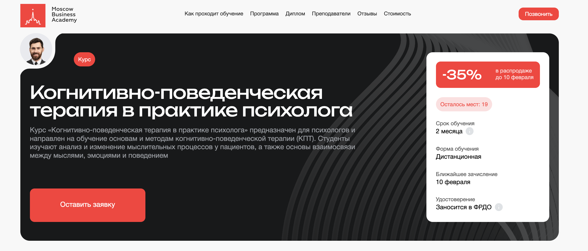- ✅ Официальный сайт: moscow.mba
- 💸 Цена обучения: 28 900 ₽ сразу.
- 💳 Рассрочка: 12 месяцев без процентов по 2 408 ₽/мес
- 📚 Формат: онлайн, видеоматериалы, воркшопы, домашние задания.
- ⏳ Продолжительность: 2 месяца.
- 📜 Документ: удостоверение о повышении квалификации и сертификат.
- 📝 Трудоустройство: 65% выпускников трудоустраиваются в течение 3 месяцев после курса.
- 🔷 Для кого подходит курс: практикующие психологи и специалисты смежных областей.
Особенности курса:
Курс «Когнитивно-поведенческая терапия в практике психолога» предлагает уникальную возможность для специалистов изучить методы изменения мыслительных процессов. Программа обеспечивает экономию времени благодаря удобству дистанционного обучения и доступу из любой точки мира. Преподаватели — эксперты с богатым практическим опытом, что создаёт возможность для интеграции полученных знаний в рабочую практику. Специальный акцент сделан на теоретические и методологические основы КПТ, что усиливает компетенции участников. Учебный процесс включает видеоуроки и практические воркшопы, позволяющие углублять знания и навыки в реальном времени.
Кратко о программе:
- Анализ и изменение мыслительных процессов.
- Основы взаимосвязи между мыслями, эмоциями и поведением.
- История и принципы схема-терапии.
- Теоретические и методологические основы КПТ.
- Разработка планов терапии и корректировка поведенческих шаблонов.
Чему научитесь:
- Применять КПТ для решения психологических проблем.
- Распознавать и изменять негативные мыслительные шаблоны.
- Устанавливать эффективное взаимодействие с клиентами.
- Овладеть техниками работы с когнитивными искажениями.
Преимущества:
- Гибкая форма обучения, подходящая для работающих специалистов.
- Современные методики преподавания и актуальные материалы.
- Возможность освоить востребованные навыки и повысить конкурентоспособность на рынке труда.
- Поддержка кураторов на протяжении всего курса.
Отзывы учеников:
Многие студенты отмечают высокий уровень профессионализма преподавателей и актуальность программы, что позволяет успешно применять знания на практике. Также ценят удобный формат обучения и поддержку, доступную в процессе прохождения курса.
13. Когнитивно-поведенческая психотерапия в практике психолога — ЦАППКК
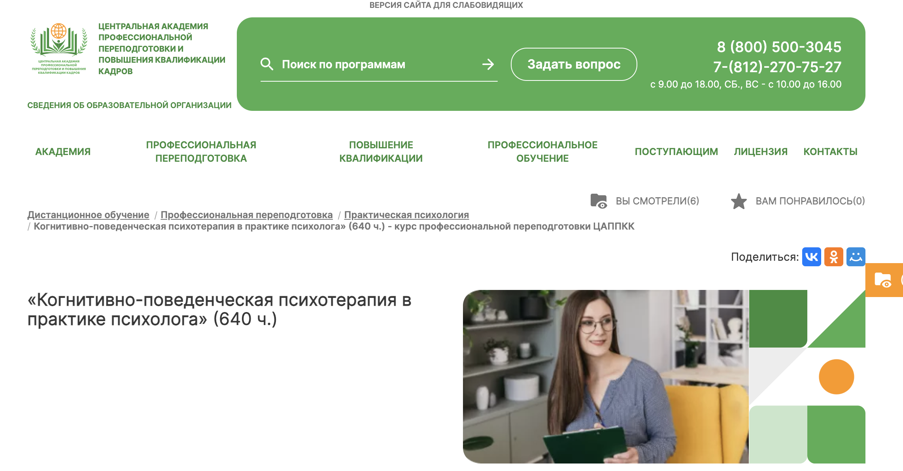- ✅ Официальный сайт: appkk.ru
- 💸 Цена обучения: 30 500 р
- 💳 Рассрочка: доступна на 12 месяцев от 2 542 р/мес.
- 📚 Формат: дистанционное обучение с применением онлайн-технологий, включая аудиолекции и вебинары.
- ⏳ Продолжительность: 5 месяцев (640 часов).
- 📜 Документ: диплом о профессиональной переподготовке, вносимый в государственный реестр ФИС ФРДО.
- 📝 Трудоустройство: помощь HR-наставника, включая консультации и подбор вакансий.
- 🔷 Для кого подходит курс: психологи, психотерапевты и все, кто интересуется данной темой.
Особенности курса:
Курс предлагает уникальное сочетание теории и практики, ориентированной на современное применение когнитивно-поведенческой терапии. Студенты получают доступ к лекционным материалам 24/7, что позволяет учиться в удобное время без отрыва от основной работы. Программа разработана с учётом требований профессиональных стандартов и включает авторские методики опытных преподавателей. Дополнительные материалы курса можно сохранить для использования после его окончания. HR-наставник поддерживает студентов на протяжении всего процесса обучения и помогает в трудоустройстве.
Кратко о программе:
- Введение в когнитивно-поведенческую психотерапию.
- Техники и методы работы с клиентами.
- Применение практических навыков для решения депрессии и тревожных расстройств.
- Анализ и выявление когнитивных искажений.
- Практические задания и тесты для закрепления материала.
Чему научитесь:
- Определять и исправлять ошибочные умозаключения клиентов.
- Применять эффективные методики работы с депрессией и тревожностью.
- Использовать когнитивно-поведенческую терапию на практике.
- Развивать профессиональные навыки в области психотерапии.
Преимущества:
- Бессрочный доступ к обучающим материалам и вебинарам.
- Поддержка преподавателя и техподдержки без выходных.
- Возможность совмещать обучение с работой.
- Содействие в трудоустройстве после завершения курса.
Отзывы учеников:
Студенты высоко оценивают доступность материалов и оперативность обратной связи от преподавателей. Особое внимание уделяют качеству учебных материалов и практическому подходу к обучению. Также отмечают помощь HR-наставника в вопросах карьеры и трудоустройства.
14. Когнитивно-поведенческая терапия как метод психокоррекционного воздействия при аддиктивном и суицидальном поведении, тревожно-депрессивных расстройствах — НИИДПО
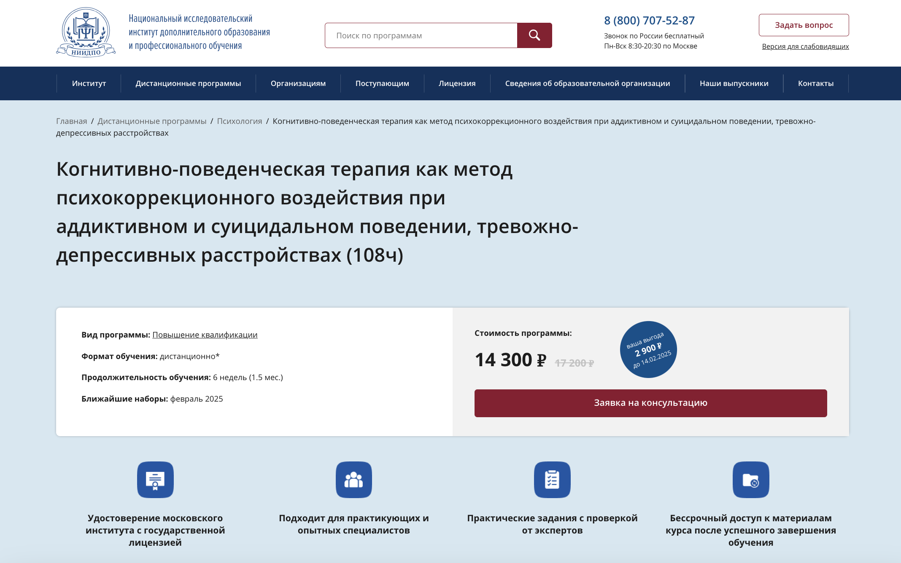- ✅ Официальный сайт: niidpo.ru
- 💸 Цена обучения: 14 300 ₽
- 💳 Рассрочка: по запросу
- 📚 Формат: дистанционное обучение, видеолекции, практические задания, тесты
- ⏳ Продолжительность: 6 недель
- 📜 Документ: удостоверение московского института с государственной лицензией
- 📝 Трудоустройство: возможность работы в стационарах, социальных службах, частной практике
- 🔷 Для кого подходит курс: практикующие и опытные специалисты в области психологии
Особенности курса:
Курс предназначен для подготовки специалистов в области когнитивно-поведенческой терапии. Он фокусируется на методах и техниках, применяемых при аддиктивном и суицидальном поведении, а также тревожно-депрессивных расстройствах. Участники освоят основы КПТ и научатся эффективно применять их в практике. Программа предлагает удобный формат обучения с доступом ко всем материалам после завершения. Кроме того, студенты получают доступ к архиву вебинаров, что способствует непрерывному обучению и профессиональному росту.
Кратко о программе:
- Основы когнитивно-поведенческой терапии
- Техники коррекции аддиктивного поведения
- Коррекция тревожно-депрессивных расстройств
- Специфика терапии суицидального поведения
- Практическое применение техник КПТ
Чему научитесь:
- Понимать и применять основы когнитивно-поведенческой терапии
- Выстраивать профессиональные психотерапевтические отношения
- Работать с депрессиями, фобиями, аддикциями
- Использовать КПТ для повышения самооценки и уверенности в себе
Преимущества:
- Бессрочный доступ к материалам после окончания курса
- Практическая направленность и задания с проверкой от экспертов
- Подходит для специалистов с базовым профильным образованием
- Возможность участия в онлайн-вебинарах и доступ к их архиву
Отзывы учеников:
Участники курса отмечают доступность и удобство дистанционного формата обучения. Студенты хвалят содержание курса за практическое применение и полезные вебинары. Отдельно отмечают большое количество материалов и поддержку от преподавателей.
Когнитивно-поведенческий терапевт: кто это и чем занимается?
Когнитивно-поведенческий терапевт — специалист в области когнитивно-поведенческой психотерапии, который помогает клиентам справляться с различными психологическими проблемами. В своей работе он использует методы когнитивно-поведенческой терапии, направленные на изменение негативных мыслительных паттернов и коррекцию поведенческих стратегий.
Что делает КП-терапевт?
Основная задача когнитивно-поведенческого терапевта — помочь клиентам изменить деструктивные убеждения, которые провоцируют тревожные расстройства, депрессивные состояния и другие психологические проблемы. Работа специалиста основана на применении когнитивных техник и поведенческих методов, позволяющих улучшить качество жизни пациентов.
- Диагностика психологических проблем.
- Разработка индивидуального плана терапии.
- Применение методов когнитивно-поведенческой психотерапии.
- Проведение терапевтических сессий в формате онлайн и очно.
- Обучение клиентов техникам самопомощи и навыкам консультирования.
- Сопровождение пациентов на всех этапах терапии.
Какие знания и навыки необходимы когнитивно-поведенческому терапевту?
Чтобы стать успешным специалистом в сфере когнитивно-поведенческой терапии, необходимо обладать рядом теоретических и практических знаний. Ключевыми компетенциями являются:
- Знание структуры когнитивно-поведенческой терапии и её принципов.
- Владение эффективными методами психотерапии.
- Навыки диагностики тревожных и депрессивных расстройств.
- Умение применять когнитивные и поведенческие техники.
- Способность работать с моделями поведения клиентов.
- Знание современных форматов обучения и методов дистанционного консультирования.
Востребованность и зарплата когнитивно-поведенческого терапевта в России в 2025 году
В 2025 году профессия когнитивно-поведенческого терапевта продолжает набирать популярность. Востребованность специалистов растет, поскольку когнитивно-поведенческая терапия признана одним из самых эффективных подходов в лечении тревожных расстройств, депрессий и других психологических проблем.
Средняя зарплата когнитивно-поведенческого терапевта в России варьируется в зависимости от опыта, квалификации и региона. В крупных городах, таких как Москва и Санкт-Петербург, специалист может зарабатывать от 80 000 до 150 000 рублей в месяц, а в регионах — от 50 000 рублей.
Как стать когнитивно-поведенческим терапевтом?
Чтобы стать когнитивно-поведенческим терапевтом, необходимо пройти соответствующее обучение. Оптимальным вариантом является прохождение курса по когнитивно-поведенческой психотерапии в аккредитированных институтах психологии или центрах психологического образования.
Где учиться?
- Институты и международные ассоциации когнитивно-поведенческой терапии.
- Курсы повышения квалификации в центре когнитивной психотерапии.
- Программы дополнительного профессионального образования по когнитивно-поведенческим методам.
- Обучение в формате онлайн с возможностью прохождения дистанционного курса.
Преимущества дистанционного обучения КПТ
Современные технологии позволяют осваивать когнитивно-поведенческую терапию в дистанционном формате. Это удобный формат для тех, кто хочет совмещать обучение с работой или другими обязательствами.
- Гибкий график обучения.
- Доступ к учебным материалам в удобной платформе.
- Возможность получать обратную связь от преподавателей.
- Прохождение курса без привязки к месту проживания.
- Выдается диплом или сертификат по окончании программы.
Какие перспективы у специалистов в когнитивно-поведенческой терапии?
После прохождения обучения и получения диплома можно работать в различных направлениях психотерапии. Когнитивно-поведенческая терапия активно применяется в клинической психологии, частной практике, медицинских учреждениях и образовательных центрах.
Перспективные направления для работы в КПТ:
- Индивидуальное консультирование.
- Работа с тревожными расстройствами и депрессиями.
- Групповая терапия.
- Обучение специалистов методам КПТ.
- Разработка терапевтических программ.
Когнитивно-поведенческая психотерапия — это современный и эффективный метод работы с различными психологическими проблемами. Освоить навыки консультирования и методы КПТ можно как в очном, так и в дистанционном формате. Обучение проводится опытными преподавателями, а по завершении курса выдается диплом, который позволяет применять методы когнитивно-поведенческой терапии на практике. Высокая востребованность специалистов в данной сфере делает эту профессию перспективной и хорошо оплачиваемой.
Обучение когнитивно-поведенческой терапии дистанционно: удобный формат для освоения практических навыков
Когнитивно-поведенческая терапия (КПТ) – один из наиболее эффективных методов психотерапии, применяемых для работы с тревожными расстройствами, депрессиями и другими психологическими проблемами. В современном мире дистанционный формат обучения становится все более популярным благодаря удобной платформе и доступным курсам. В данной статье разберем основные этапы обучения КПТ в формате онлайн, рассмотрим применение когнитивно-поведенческой психотерапии и её эффективность.
Преимущества дистанционного обучения когнитивно-поведенческой терапии
- Доступность обучения. Дистанционное образование позволяет осваивать методы КПТ из любой точки мира, без необходимости посещения учебного центра.
- Гибкость графика. Курсы включают лекции и практические занятия, которые можно проходить в удобное время.
- Практическая направленность. Обучение проводится с акцентом на применение КПТ в реальной практике, включая разбор кейсов и терапевтические сессии.
- Сертификация. По окончанию обучения выдается диплом или удостоверение, подтверждающее квалификацию специалиста.
- Поддержка преподавателей. Слушатели получают обратную связь, индивидуальные консультации и доступ к дополнительным материалам.
Основные этапы прохождения курса по КПТ
Программа дистанционного обучения когнитивно-поведенческой терапии включает несколько ключевых этапов:
- Изучение теоретических основ. Включает базовое психологическое образование, когнитивные модели и структуру КПТ.
- Освоение методов диагностики. В рамках курса изучаются поведенческие методы, техники КПТ и применение когнитивно-поведенческой терапии в практике.
- Развитие навыков консультирования. Практикующие психологи проходят тренинги по проведению терапевтических сессий, консультированию клиентов и использованию когнитивных техник.
- Работа с реальными кейсами. Освоение техник когнитивно-поведенческой психотерапии через моделирование ситуаций и анализ поведения клиентов.
- Прохождение экзамена. После завершения курса студенты получают дипломы, удостоверения или сертификаты, подтверждающие их квалификацию.
Методы КПТ, изучаемые в дистанционном формате
В рамках курса студенты изучают и применяют на практике эффективные методы когнитивно-поведенческой психотерапии, включая:
- Когнитивную концептуализацию. Определение автоматических мыслей, убеждений и моделей поведения пациента.
- Техники КПТ. Различные когнитивные техники, направленные на изменение негативных установок.
- Поведенческие методы. Эффективные подходы к работе с тревожными расстройствами, депрессией, паническими атаками.
- Протоколы терапии. Этапы терапии тревожных состояний, депрессивных расстройств и других проблем.
- Навыки консультирования. Развитие умений работы с клиентами в рамках когнитивно-поведенческой психотерапии.
Как выбрать курс по когнитивно-поведенческой психотерапии?
При выборе дистанционного курса по КПТ важно учитывать:
- Учебные программы. Курс должен включать изучение теоретических знаний и практическое задание.
- Преподавательский состав. Опытные психологи и психотерапевты, работающие в сфере клинической психологии.
- Формат обучения. Удобный формат, который позволяет совмещать обучение с профессиональной деятельностью.
- Документы по окончанию курса. Диплом, удостоверение или сертификат, подтверждающий квалификацию.
- Отзывы студентов. Реальные кейсы и успешные истории специалистов, прошедших обучение.
Дистанционное обучение когнитивно-поведенческой психотерапии – это удобный и доступный способ освоить базовые навыки консультирования, изучить современные методики и начать практику психолога. Форматы обучения позволяют гибко планировать учебный процесс, проходить курсы в удобной форме и применять методы КПТ на практике. Полученные знания помогают клиентам справляться с различными психологическими проблемами, делая когнитивно-поведенческую терапию одним из наиболее эффективных направлений психотерапии.
------------------------------------------------
Реклама. Информация о рекламодателе по ссылкам в статье.